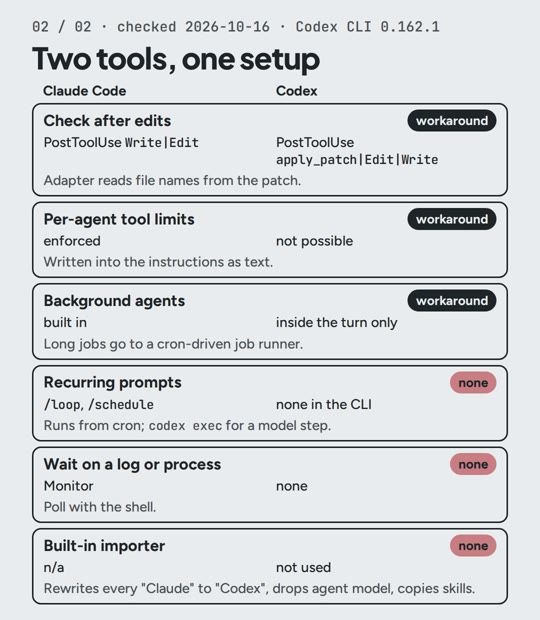

Switching AI coding tools usually means writing your rules again. I use Claude Code and Codex on one setup; if one goes down, I open the other and keep working. This note is the three steps from the video, the prompt, and the files ready to copy.
The three steps
- One rules file (
rules/RULES.md). It is the only file I edit. Copying rules by hand works exactly once. - A script writes it twice:
CLAUDE.mdfor Claude Code,AGENTS.mdfor Codex, each with a line saying where to edit.--checkfails when one of them is out of date, so a hand edit gets caught. - Every session ends with a handoff file (
HANDOFF.md): current state, decisions, next steps. Whichever tool opens next reads it first, so it knows where the last one stopped.
Cost (prices as of Oct 2026)
- The files and the script: $0.
- Claude Code: included from Claude Pro, $20/month, which has usage limits. I use Max ($200/month) for everything I build, not just this.
- Codex: I use it through ChatGPT Plus, $20/month (OpenAI's pricing page, checked 2026-10-20).
Try it
Paste this into your AI coding tool, in your project folder. Needs Python 3.
Tested 2026-10-29 with Claude Code in an empty folder with a two-line rules/RULES.md: it wrote
both files with the same rules; --check passed; after I added a rule, --check listed both
files as out of date and exited 1.
Write a Python script, generate.py, standard library only. It reads rules/RULES.md and writes two files with the same rules: CLAUDE.md for Claude Code and AGENTS.md for Codex.
Start each file with a line saying it is generated by generate.py and that edits go in rules/RULES.md, then a heading naming the tool, then the rules. Print one line per file: updated or unchanged.
Add a --check flag that writes nothing, lists the files that are out of date, and exits 1 if any are.
And at the end of every session, tell the tool:
Before we stop, write HANDOFF.md: current state, decisions, next steps. Read it first at the start of the next session.
The full setup I use, ready to copy: resources/two-tools-setup.
It also links both skill folders (.claude/skills and .agents/skills) to one skills/
folder, so a skill edited for one tool is edited for both. On Windows, run it in WSL (or turn
on Developer Mode) so the links can be created. Tested on 2026-10-20 in an empty folder.
More: what has no equivalent
I went through my setup piece by piece and gave each one a status: direct, converted, workaround or none. Of the 12 pieces in the short map, 3 have no Codex equivalent (checked 2026-10-16 with Codex CLI 0.162.1):
- Recurring prompts (
/loop,/schedulein Claude Code). They run from cron instead; a step that needs the model callscodex exec. - Waiting on a log or a process. The shell polls instead.
- The built-in importer. Not used: it rewrites every "Claude" in the text to "Codex".

Gotchas
- Codex read only the first 32 KiB of a 51 KB project file. Setting
project_doc_max_bytes = 131072in~/.codex/config.tomlfixed it. - Codex can read
CLAUDE.mddirectly withproject_doc_fallback_filenames = ["CLAUDE.md"]. If the project also has anAGENTS.md, that one wins andCLAUDE.mdis ignored. - A Codex hook runs only after you trust it once in
/hooks. Until then it does nothing, quietly. - Codex cannot limit an agent's tools. Agents inherit the parent's sandbox, so the limit ("read-only, no shell") is written into the instructions as text.
En español: uso Claude Code y Codex con un solo archivo de reglas. Tres pasos: las reglas
viven en rules/RULES.md, un script escribe CLAUDE.md y AGENTS.md desde ahí (y --check
avisa si alguno quedó desactualizado), y cada sesión termina con HANDOFF.md, para que la
siguiente herramienta sepa dónde quedamos. El prompt de arriba (en inglés) está probado el
2026-10-29. Costo: Claude Code desde Claude Pro, $20/mes, con límites (uso Max, $200/mes);
Codex con ChatGPT Plus, $20/mes (precios a oct 2026).